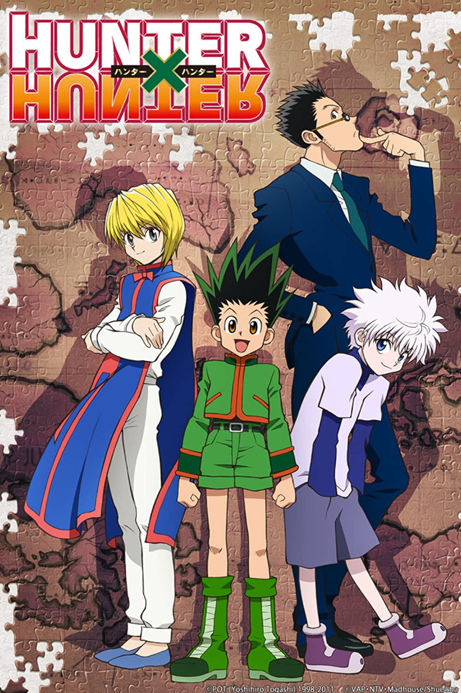

Top 1
One Piece

Monkey D. Luffy is the protagonist of One Piece, a narrative about a young guy with a single ambition: to locate the mythical treasure known as the One Piece and become King of the Pirates.
Top 2
Naruto Shippuden

Naruto Shippuden: The story of Naruto continues as he strives to fight off an organization called Akatsuki that's after him while trying to save his friend Sasuke from the path of darkness.
Top 3
Demon Slayer

Demon Slayer, follows the story of Tanjiro Kamado and his sister turned demon Nezuko. Determined to find a way to turn Nezuko back into a human Tanjiro joins the Demon Slayer Corps.
Top 4
Attack On Titan

Attack on Titan is set in a world where humanity lives inside cities surrounded by three enormous walls that protect them from the gigantic man-eating humanoids referred to as Titans.
Top 5
HunterxHunter
The story focuses on a young boy named Gon Freecss who discovers that his father, who left him at a young age, is actually a world-renowned Hunter.
Top 6
Haikyuu!!

Hinata Shouyou, a short middle school student, gained a sudden love of volleyball after watching a national championship match on TV.
Top 7
My Hero Academia

The story follows Izuku Midoriya, a boy born without superpowers in a world where they have become commonplace, but who still dreams of becoming a superhero himself.
Top 8
Seven Deadly sins

The story of the Seven Deadly Sins, a group of warriors who were wrongly accused of a crime they didn't commit and went on a quest to vindicate themselves.
Top 9
Food Wars

Soma Yukihira enrolls in an elite culinary school to become a full-time chef and surpass his father's culinary skills.
Top 10
The Promised Neverland

When three gifted kids at an isolated idyllic orphanage discover the secret and sinister purpose they were raised for, they look for a way to escape from their evil caretaker.